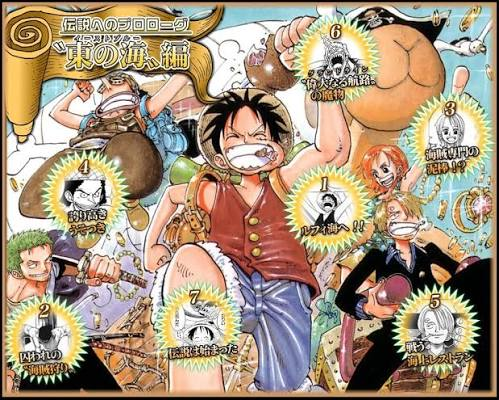
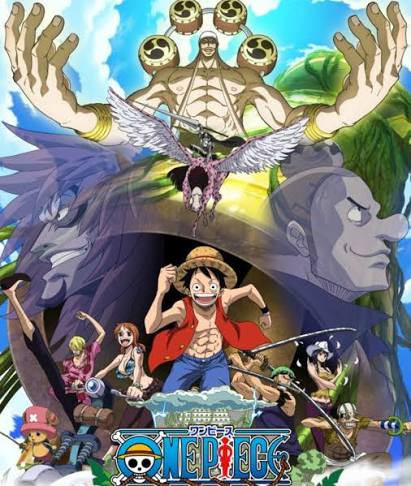
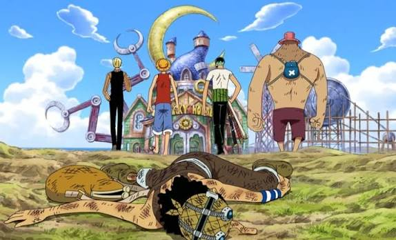
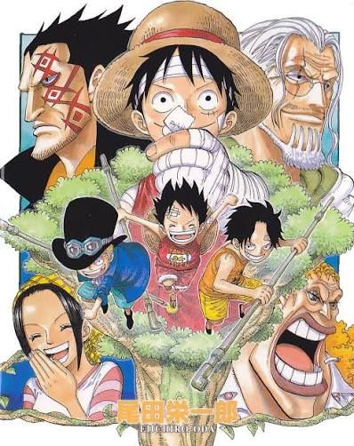
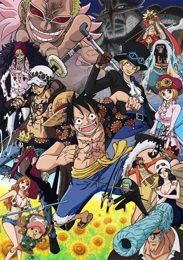
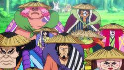

01

EAST BLUE
Romance Dawn
Luffy comienza su aventura y conoce a Zoro, uno de los primeros integrantes de su tripulación.
Desde el East Blue hasta los mares más peligrosos, cada arco representa una nueva aventura, nuevos enemigos y momentos importantes en el viaje de Luffy.
⚓ Comenzar viajeAquí comienza el viaje de Monkey D. Luffy y la formación de su tripulación.

Luffy comienza su aventura y conoce a Zoro, uno de los primeros integrantes de su tripulación.

Luffy y sus compañeros enfrentan a Arlong para ayudar a Nami y liberarla de su dominio.

La tripulación llega a la ciudad donde comenzó y terminó la historia de Roger.
La aventura cambia cuando los Sombrero de Paja entran en Grand Line.

La tripulación acompaña a Vivi mientras se enfrenta a Crocodile y Baroque Works.

Los Sombrero de Paja llegan a una misteriosa isla situada sobre las nubes.

La tripulación llega a una ciudad donde comienzan importantes conflictos.
Uno de los acontecimientos más importantes del mundo de One Piece.

Marineford reúne a grandes figuras del mundo en un enorme enfrentamiento.
Este acontecimiento tiene consecuencias importantes para Luffy y el futuro de la historia.
Continuar el viaje →La tripulación continúa su viaje hacia territorios todavía más peligrosos.

Luffy y sus aliados se enfrentan a Donquixote Doflamingo.

Sanji y la tripulación quedan involucrados en un conflicto relacionado con Big Mom.

La tripulación llega a Wano, donde se desarrolla uno de los grandes conflictos.
Nuevas islas, nuevos enemigos, nuevos amigos y nuevos sueños esperan en el camino hacia el One Piece.
← Volver al anime